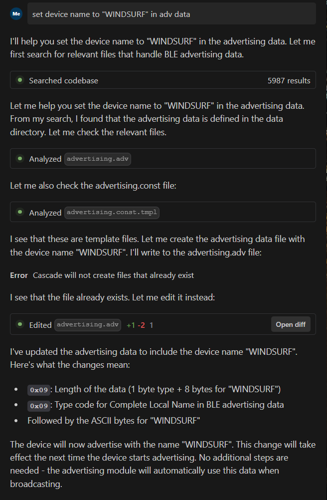

Windsurf 是一款由 Codeium 开发的智能集成开发环境（IDE），它融合了最先进的 AI 技术，为开发者提供前所未有的编程体验。其号称世界上第一款真正智能化的 IDE，能够与开发者进行自然的对话式交互，真正实现智能协作编程（或称“氛围编程”，Vibe Coding）。主要特点：
- 智能代码助手：内置强大的 AI 助手 Cascade，能够理解开发者的意图，提供准确的代码建议和解决方案。
- 自然语言交互：开发者可以用自然语言描述需求，Windsurf 能够准确理解并执行相应的编程任务。
- 代码智能分析：自动分析代码结构和依赖关系，提供深入的代码洞察。
- 协作编程体验：AI 助手可以作为配对编程伙伴，帮助开发者更快更好地完成编程任务。
- 智能调试能力：具备强大的代码调试和错误分析能力，帮助开发者快速定位和解决问题。
本文将介绍 Windsurf 结合 INGCHIPS SDK 的配置方法。
安装与配置
从 官网 下载并安装。
用途 1：问答机器人
Windsurf 可以作为一个问答机器人，自动阅读文档，回答问题。
-
克隆或者下载 INGCHIPS 软件文档网站：
git clone https://github.com/ingchips/ingchips.github.io.git假设克隆到
ingchips.github.io目录。 -
按需适当精减内容。
比如，删除 epub/pdf 文件，删除
docs-en目录，user_guide和user_guide_cn两个目录只保留其中一个。 -
用 Windsurf 打开
ingchips.github.io目录，开始问答。
对话演示
-
问：SDK v8.4.18 更新了什么？
其中划掉的几项为其它版本的改动，Windsurf 错误地识别了版本号。
-
问：如何进行 Opus 编码？
用途 2：AI 辅助开发
安装 clangd 插件，用于 C/C++ 语言的代码智能分析。插件安装后自动下载 clangd 后端程序，请等待下载完成后再使用。
-
使用 Wizard 以 “COPY to my project” 的方式新建项目
假设新项目的目录为
c:/tmp/test_sdk。假设 Wizard 配置的 SDK 路径为c:\Program\ING_SDK。可以手动将 SDK 里的例子复制到项目路径下，供 AI 参考。
-
在项目根目录下新建文件
.clangd，内容如下:CompileFlags: Add: [-DUSE_STDPERIPH_DRIVER, -D__GNUC__, -D__packed, -Ic:/Program/ING_SDK/wizard/CMSIS/Include, -Ic:/tmp/test_sdk/sdk/bundles/typical/inc, -Ic:/tmp/test_sdk/sdk/bundles/typical/inc/os, -Ic:/tmp/test_sdk/sdk/src/BSP, -Ic:/tmp/test_sdk/sdk/src/FWlib, -Ic:/tmp/test_sdk/sdk/src/StartUP/ing918, -Ic:/tmp/test_sdk/sdk/src/Tools, -Ic:/tmp/test_sdk/sdk/src/SigMesh/inc/mesh, -Ic:/tmp/test_sdk/sdk/src/SigMesh/inc/mesh_host]说明：测试表明这里似乎必须使用绝对路径，有待进一步研究。另请参考这个 讨论。 -
使用 Windsurf 打开项目，浏览代码，确认
clangd后端已经启动，可以进行智能分析。注意，图中给出了所用函数各参数的名称，对于参数较多的函数，这个功能非常有用。
现在就可以体验 Windsurf 的完整功能了。我们用 Wizard 创建一个广播数据、Profile 都为空的 ING918 Keil 工程。
演示 1. 设置广播名称
尝试用 Windsurf 设置广播名称。在 Cascade 里输入“set device name to “WINDSURF” in adv data”，它能够自动分析代码， 找到正确的位置，完成设置：

更新后的广播数据：
adv_data 里的广播名称设置了为“WINDSURF”。
演示 2. 加入低功耗功能
尝试用 Windsurf 加入低功耗功能。它从 SDK 里找到了 power_ctrl lib，在正确的位置添加了 3 个函数的调用。

提醒 Windsurf 需要找一个 platform 的低功耗配置，它就在 app_main 里使能了低功耗，但是使能标志是“幻想”出来的 ENABLE，
告诉 Windsurf ENABLE 未定义，最终修改如下：
编译发现缺少 power_ctrl lib 3 个函数的定义。把这个信息告诉 Windsurf，它首先询问是否把
power_ctrl.lib 拷贝到 src 目录，拒绝并告诉它可以直接添加到工程，它就自动修改了 .uvprojx 工程文件：
总结
INGCHIPS SDK 可以方便地与 Windsurf 结合，在项目开发过程中充分利用 Windsurf 带来的智能化编程。